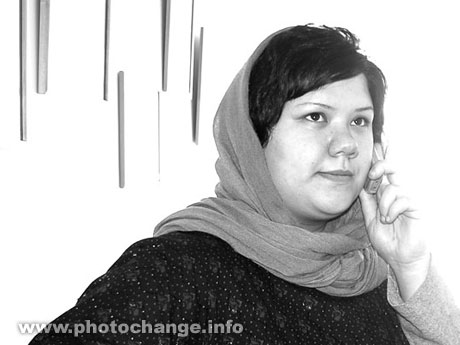

|
|
|
Browsing
Contact Us |
Campaigners |
Face to Face |
Tribune |
Interview |
News |
On the Web |
One Million |
Report
Farsi | Français | German | Italian | Spanish | العربية Also in this section
|
 Amnesty International Issues Urgent Action in the Case of Delaram AliSunday 11 November 2007 Amnesty International a leading human rights organization has issued an urgent action in the case of Delaram Ali. While the Head of the Judiciary, Ayatollah Shahroudi has issued a temporary order preventing the implementation of Delaram’s prison sentence of 2 years and 6 months, allowing for a two-week review, the possibility of implementing this sentence still remains. The urgent action on Delaram issued by Amnesty International was issued prior to the intervention of Ayatollah Shahroudi, but given that there seems to still be a possibility that this sentence will be implemented, Delaram still needs your support. The Amnesty statement appears below. To take action in support of Delaram Ali please visit the site of Amnesty International. PUBLIC AI Index: MDE 13/131/2007 8 November 2007 UA 298/07 Prisoner of conscience/ flogging Delaram Ali has been told to present herself to court in order to start serving a prison sentence which has not formally been conveyed to her. She has been told that if she does not attend court by 10 November, she will be arrested. There is also a risk that she will be flogged. If she is detained, Amnesty International would consider her to be a prisoner of conscience, detained solely for the peaceful exercise of her right to freedom of expression and association for her activities promoting women’s rights in Iran. The Head of the Judiciary has the power to suspend Delaram Ali’s sentence and to order a reinvestigation of the case. Delaram Ali, a social worker, was arrested on 12 June 2006 during a peaceful demonstration in the capital, Tehran, which called for an end to discriminatory legislation against women. She and other demonstrators were beaten by police, and her left hand was broken as a result. She was released shortly afterwards, but was tried in June 2007 by Branch 16 of the Revolutionary Court in Tehran, which found her guilty of "participation in an illegal gathering", "propaganda against the system" and "disrupting public order and peace". In July 2007, the court sentenced her to 34 months’ imprisonment and 10 lashes. Delaram Ali has said that her defence lawyer was not allowed to speak during her trial. She remained free pending an appeal, but on 4 November 2007, reports indicated that judiciary officials had told Delaram Ali and her lawyers by telephone that an appeal court had ruled on her appeal. The verdict has not been sent in writing to Delaram Ali. Some reports suggest that the appeal court has overturned the flogging sentence, and reduced the prison term to 30 months. Delaram Ali was told to report to the court for implementation of the verdict, at the latest by 10 November, or face arrest. Under Iranian legislation, it is illegal for a person to serve a sentence prior to it being delivered in writing to the person concerned. Delaram Ali lodged a complaint against her ill-treatment during arrest, along with the others who were beaten, but in October 2007, a court dismissed all charges against the police officers who had been present at the demonstration. In July, Delaram Ali said in an interview that her sentence of flogging, although “not much when compared to the prison term, [was] an insult to civil society and the women’s movement”. She also said in another interview that “[t]his verdict bears a huge cost for me. I, like our attorneys, could only think that this sentence is more like a warning for other women’s rights activists. ..Another issue is the allegations against me which are the same three allegations that other activists have been accused of. However, other activists have been cleared of two of the charges: “propaganda against the state” and “disrupting the public order”. I was convicted on these charges as well and received a sentence for them. This is a discrepancy, because I, alone, could not distribute propaganda against the state or disrupt public order. These verdicts are more like a warning from the state to remind us that this is also one of the positions the state can take against us, so that others get intimidated and learn their lessons”. BACKGROUND INFORMATION On 12 June 2006 the Iranian security forces forcibly broke up a peaceful demonstration by women and men advocating an end to legal discrimination against women in Iran. The demonstrators had gathered in the "Seventh of Tir" Square in Tehran to call, among other things, for changes in the law to give a woman’s testimony in court equal value to that of a man; and for married women to be allowed to choose their employment and to travel freely without obtaining the prior permission of their husband. Delaram Ali was among 70 people arrested during the demonstration on 12 June 2006 Several others were also beaten during their arrest. Photographs of their arrest can be seen at http://www.khosoof.com/archive/281.php#000281. Most, including Delaram Ali, were released shortly afterwards, but Sayed Ali Akbar Mousavi-Kho’ini was held for over four months and alleges that he was tortured in detention (see Urgent Action 181/06, AI Index: MDE 13/075/2006, 30 June 2006 and follow ups). Several other participants in the demonstration have also been sentenced, although none is currently detained.
Head of the Judiciary His Excellency Ayatollah Mahmoud Hashemi Shahroudi Ministry of Justice, Panzdah Khordad (Ark) Square, Tehran, Islamic Republic of Iran Salutation: Your Excellency Email: info@dadgostary-tehran.ir (In the subject line: FAO Ayatollah Shahroudi) Fax: +98 21 3390 4986 (please keep trying, if the called is answered, say "fax please") Leader of the Islamic Republic His Excellency Ayatollah Sayed ’Ali Khamenei, The Office of the Supreme Leader Islamic Republic Street - Shahid Keshvar Doust Street Tehran, Islamic Republic of Iran Email: info@leader.ir Salutation: Your Excellency President His Excellency Mahmoud Ahmadinejad The Presidency Palestine Avenue, Azerbaijan Intersection Tehran, Islamic Republic of Iran Fax: +98 21 6 649 5880 Email: dr-ahmadinejad@president.ir E-mail: via website: http://www.president.ir/email/ Speaker of Parliament His Excellency Gholamali Haddad Adel Majles-e Shoura-ye Eslami, Baharestan Square, Tehran, Islamic Republic of Iran Fax: +98 21 3355 6408 Email: hadadadel@majlis.ir and to diplomatic representatives of Iran accredited to your country. PLEASE SEND APPEALS IMMEDIATELY. Check with the International Secretariat, or your section office, if sending appeals after 20 December 2007. |